ITSI — GDI — AppDynamics Integration
Goal: This document explains the procedure for ingesting AppDynamics data into Splunk ITSI (IT Service Intelligence) in a concise and practical way.
Table of Contents
- Overview
- Architecture
- Installation
- Configuration
- Account Setup
- Input Configuration
- Validation
- Appendix — Creating an API Token in AppDynamics
Overview
Components Involved
- Cisco Splunk Add-on for AppDynamics
- 📖 Documentation: https://docs.splunk.com/Documentation/AppD/latest/AddOn/About
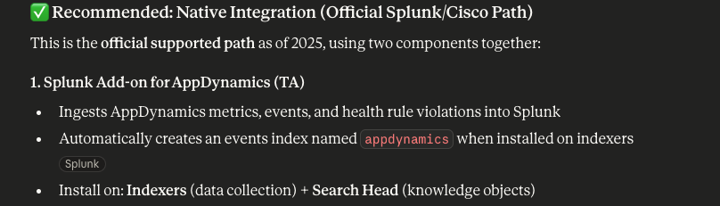
Architecture
The Splunk Add-on for AppDynamics collects data from the AppDynamics REST API via modular inputs. It provides seven input types:
| Input Type | Description |
|---|---|
| High Level Status | Overall application health |
| Hardware Metrics | Node-level CPU, memory, and disk metrics |
| Application Business Transaction (BT) Snapshots | Detailed transaction snapshots |
| Health Rule Violations | Triggered AppDynamics health rules |
| Custom Metrics | User-defined metric collection |
| Events Data | Application event records |
| Controller Audit Records / License Usage | Audit trail and license consumption |
Installation
The add-on is available on Splunkbase and can be downloaded or installed directly from the Splunk interface.
In the lab environment, navigate to Apps → Find More Apps and search for:
Cisco Splunk Add-on for AppDynamics
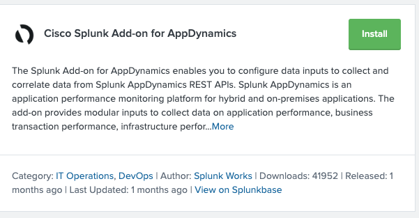
Click Install to proceed.
Configuration
After installation, two steps are required: 1. Configure the connection to AppDynamics. 2. Define which data will be collected.
⚠️ Before you begin: You will need to create an API token to access the AppDynamics API. See the Appendix if you haven't done this yet.
Account Setup
Navigate to Apps → Splunk Add-on for AppDynamics → Configuration.
Click Add and fill in the required fields as shown below:
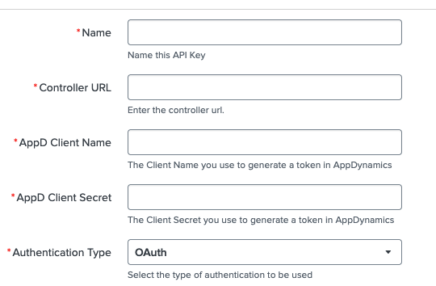
Required fields:
- Name - Something to identify this connection i.e.
SE-LAB-Account - AppDynamics Controller URL — e.e.,
https://<account>.saas.appdynamics.com - Client Name and Secret (or API client credentials)
Input Configuration
Once the connection is configured, proceed to set up the data inputs.
Navigate to Inputs and click Create New Input.
For this lab, three different input types will be configured.
Database Metrics
Fill in the fields as shown:
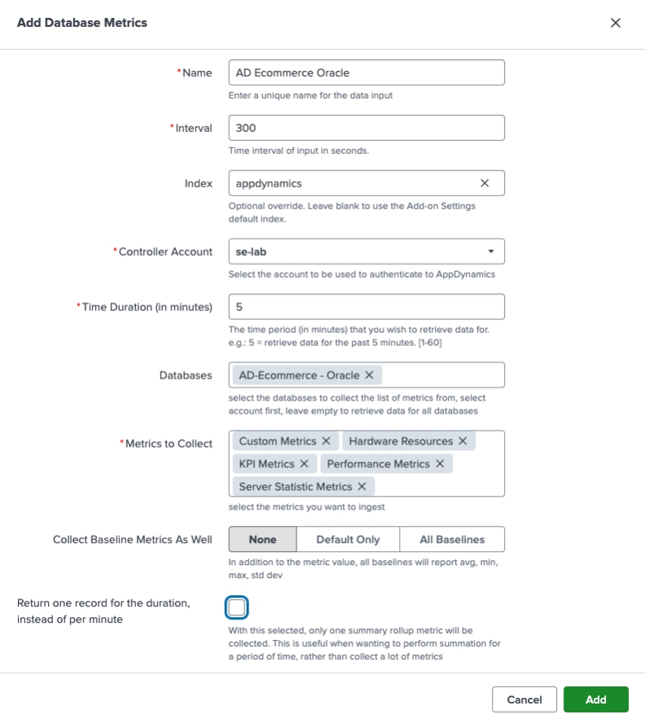
Remember to Uncheck the
Return one record for the duration, instead of per minuteoption.
High Level Status
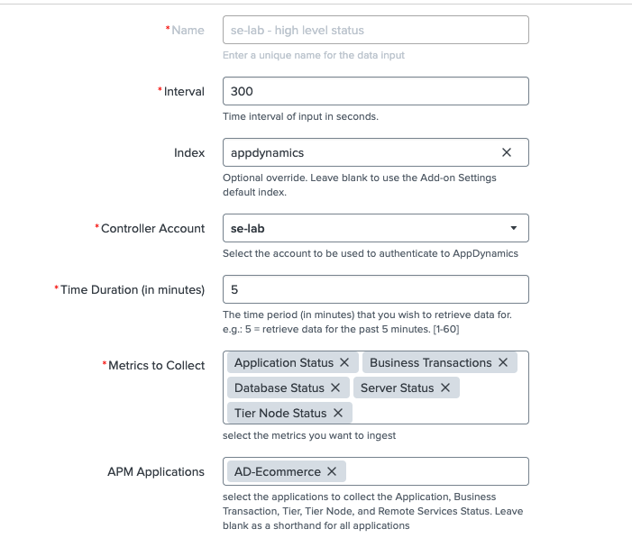
Events Data
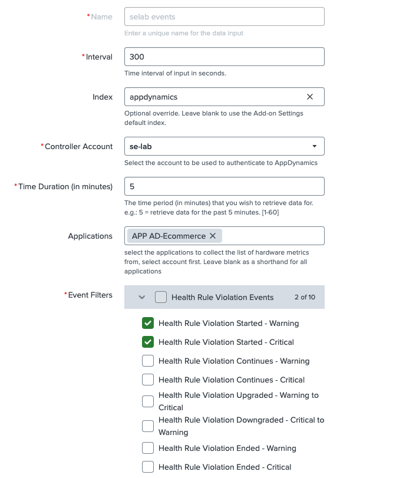
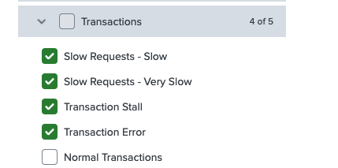
Once completed, AppDynamics data will begin appearing in Splunk within a few minutes.
Validation
The quickest way to verify the integration is to click on Monitoring Dashboard inside the add-on.
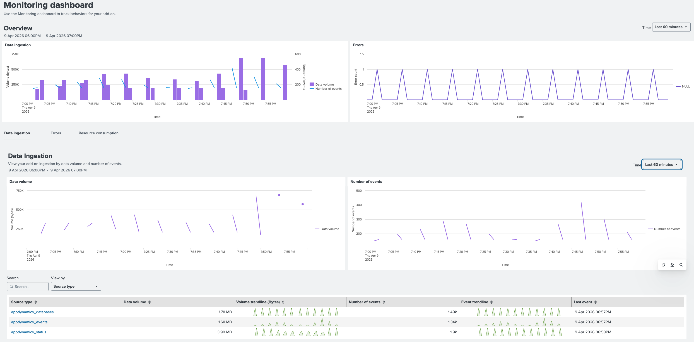
You can also run a direct SPL query in the Splunk Search interface:
index=appdynamics| stats count by application_name
| sort -count
Back | Next: GDI ThousandEyes - setup →
Appendix — Creating an API Token in AppDynamics
Step 1 — Access Administration
After logging in to the AppDynamics controller, click on Administration.
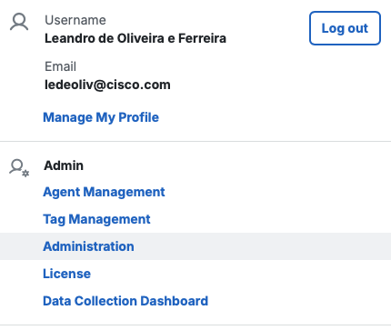
Step 2 — Navigate to API Clients
Select API Clients from the Administration menu.
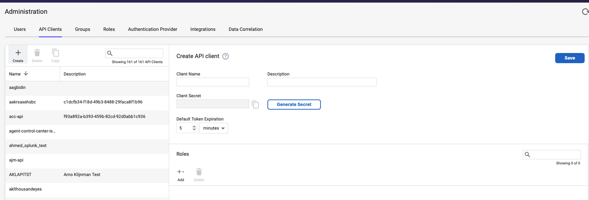
Step 3 — Create the API Client
Add a name, description, and assign the following roles:
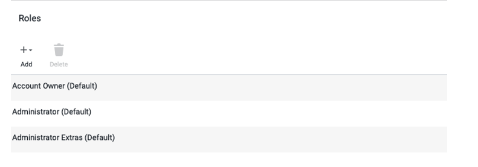
Step 4 — Generate the Secret
- Click Generate Secret.
- Save the configuration.
- Copy the generated token — you will need it during the add-on configuration.
🔐 Important: Store the token securely. It will not be shown again after you leave this page.